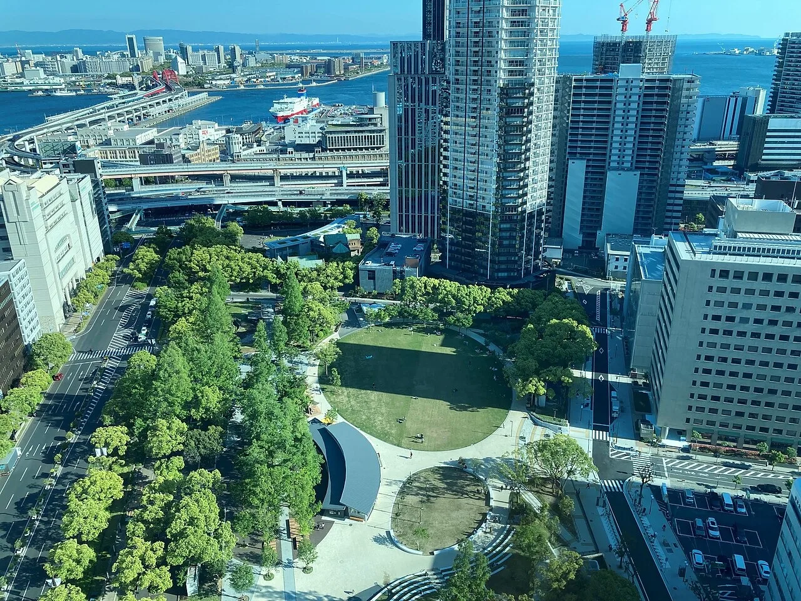
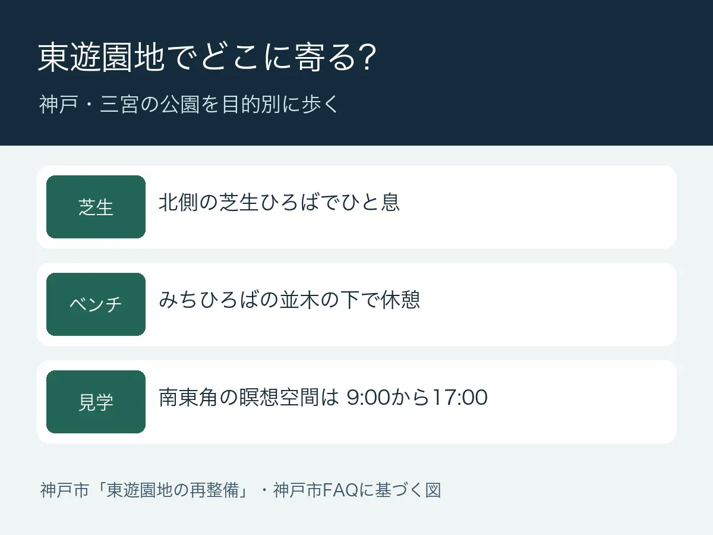

神戸・三宮の東遊園地へは、JR三ノ宮駅の西口から徒歩13分、地下鉄海岸線の三宮・花時計前駅の4番出口から徒歩6分です。芝生で休むなら北側の芝生ひろばへ、震災の記憶をたどるなら南東角の「慰霊と復興のモニュメント」へ向かいます。2026年11月24日時点の神戸市と施設運営者の案内から、駅と園内の行き先を選びます。
01三宮から東遊園地までの徒歩ルート
東遊園地は神戸市役所の南にあります。三宮の駅周辺から歩く場合は、フラワーロードに出て南へ進みます。複数の鉄道が「三宮」「三ノ宮」の名前で案内されているので、検索するときは乗っている路線名も一緒に見てください。
| 降りる駅 | 出口 | 東遊園地までの徒歩 |
|---|---|---|
| JR三ノ宮駅 | 西口 | 13分 |
| 阪急神戸三宮駅 | 東口 | 13分 |
| 阪神神戸三宮駅 | 西口 | 13分 |
| 地下鉄海岸線 三宮・花時計前駅 | 4番出口 | 6分 |
徒歩時間はURBAN PICNICによる各出口からの案内です。いま乗っている路線の出口を先に確認すると、乗り換えや駅構内の移動を増やさずに歩く計画を立てられます。待ち合わせをするなら、「三宮の駅前」よりも駅名と出口を決めるか、公園内の広場を指定すると合流しやすくなります。運営者のアクセス案内。
02芝生で過ごすか、並木で休むか
神戸市の案内によると、公園の北側には大小2か所の芝生ひろばがあります。空が開けた場所で休みたいときは芝生を、座って次の予定を相談したいときはメタセコイヤ並木の下にベンチがある「みちひろば」を目印にすると選びやすくなります。公園全体の見通しを得たいときは、高台の「見晴らしひろば」へ向かいます。

写真はKishujiRapid撮影。掲載画像は縮小し、同じライセンスで提供しています。原版・CC BY-SA 4.0。

次の予定まで短い日は、先に休む場所を決めておくと、園内を行き来する時間を減らせます。たとえば三宮で食事の待ち合わせがあるなら、北側の広場でひと息つき、帰る時刻から駅までの徒歩時間を引いて出発する組み方ができます。子どもと立ち寄る場合は、神戸市の案内で確認できるおむつ交換台や車いす用トイレも、園内で休む場所を決める手がかりになります。
03震災の記憶をたどるなら南東角へ
「慰霊と復興のモニュメント」は園内の南東角にあります。地下1階の「瞑想空間」には震災で亡くなった方の名前が掲示されています。神戸市FAQでは、平日・休日ともに9:00〜17:00が開場時間です。神戸市は、気象警報の発令時などに終日閉場する場合があると案内しています。

注意夕方に瞑想空間を見学したい日は、先に南東角へ向かうと時間を組みやすくなります。9:00〜17:00は瞑想空間の開場時間です。
休憩と見学を両方予定する日は、開場時間のある瞑想空間を先に。園内で見学にどれだけ時間を取りたいかを見積もり、その後に芝生や並木で休むと、慌てず回れます。昼間に北側だけを散歩する日と、南東角まで行く日を分けるのも手です。駅から徒歩で観光地を回る別の旅程を探している方には、松島海岸駅からの徒歩コースもあります。
04よくある質問
JR三ノ宮駅から東遊園地までは徒歩何分ですか？
運営者の案内では、西口から徒歩13分です。フラワーロードに沿って南へ向かいます。
東遊園地でベンチに座るならどこですか？
並木の下にベンチがある「みちひろば」が目印です。
震災で亡くなった方の名前はどこで見られますか？
南東角にある「慰霊と復興のモニュメント」の地下1階です。瞑想空間は平日・休日とも9:00〜17:00です。
05まとめ
- 三宮の駅ごとに出口が違います。乗っている路線を基準に徒歩経路を選びましょう。
- 芝生で過ごすなら芝生ひろば、ベンチで休むならみちひろばが目印です。
- 瞑想空間を訪れる日は、南東角までの徒歩と開場時間を予定に入れましょう。